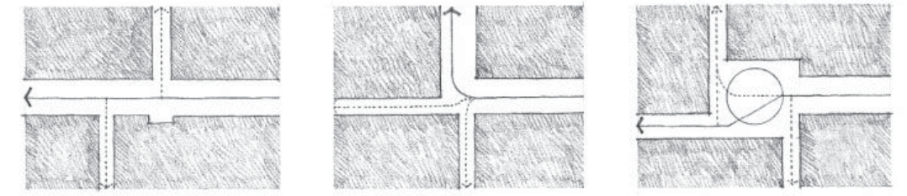
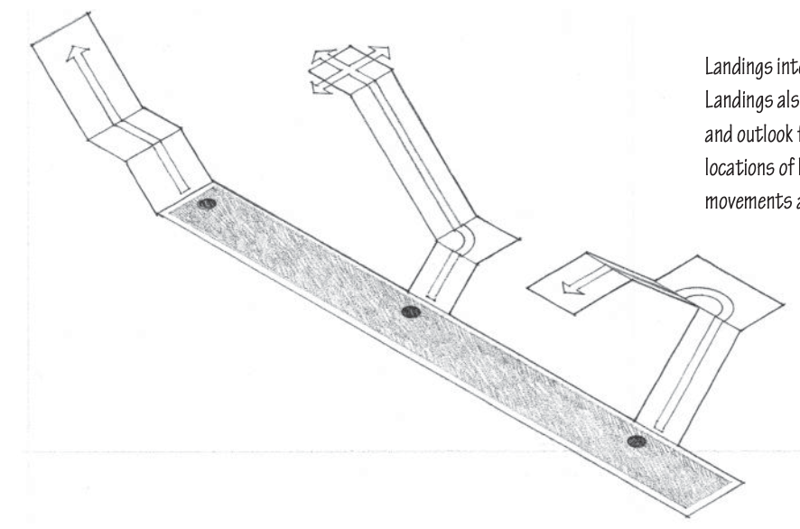

Circulation
Table of Contents
- MOVEMENT THROUGH SPACE
- Since we move in Time through a Sequence of Spaces, we experience a space in relation to where we’ve been and where we anticipate going.
Approach
- Prior to actually passing into the interior of a building, we approach its entrance along a path.
- A spiral path prolongs the sequence of the approach and emphasizes the three-dimensional form of a building as we move around its perimeter.
Entrance
- Entering a building, a room within a building, or a defined field of exterior space, involves the act of penetrating a vertical plane that distinguishes one space from another.
- Entrances may be grouped formally into the following categories: flush, projected, and recessed
- The location of an entrance relative to the form of the space being entered will determine the configuration of the path and the pattern of the activities within the space.
- Visually reinforce the entrance,
CONFIGURATION OF THE PATH
- The continuity and scale of each path at an intersection can help us distinguish between major routes leading to major spaces and secondary paths leading to lesser spaces.


Path-Space relationship
- Pass by spaces
- The integrity of each space is maintained
- Pass through spaces
- In cutting through a space, the path creates patterns of rest and movement within it
Form of the circulation space
- The form and scale of a circulation space, however, should accommodate the movement of people as they promenade, pause, rest, or take in a view along a path.
- The form of a circulation space varies according to how
- Its boundaries are defined
- Its form related to the form of the space it links
- Its qualities of scale, proportion, light, and view and articulated
- Entrances open onto it
- It handles changes in level with stairs and ramps
- A circulation space may be
- Enclosed
- Open on one side
- Open on both sides
- A narrow, enclosed path naturally encourages forward motion.
- To accommodate more traffic as well as to create spaces for pausing, resting, or viewing, sections of a path can be widened.
- The path can also be enlarged by merging with the spaces it passes through.
- Within a large space, a path can be random, without form or definition, and be determined by the activities and arrangement of furnishings within the space.
- Wide, shallow steps can serve as an invitation, while a narrow, steep stairway can lead to more private places. (may be related to traffic volume)

- Landings interrupt the run of a stair and enable it to change direction. Landings also provide opportunities for rest and possibilities for access and outlook from the stairway.

#_book/Art/Architecture/Architecture-Form-Space-and-Order